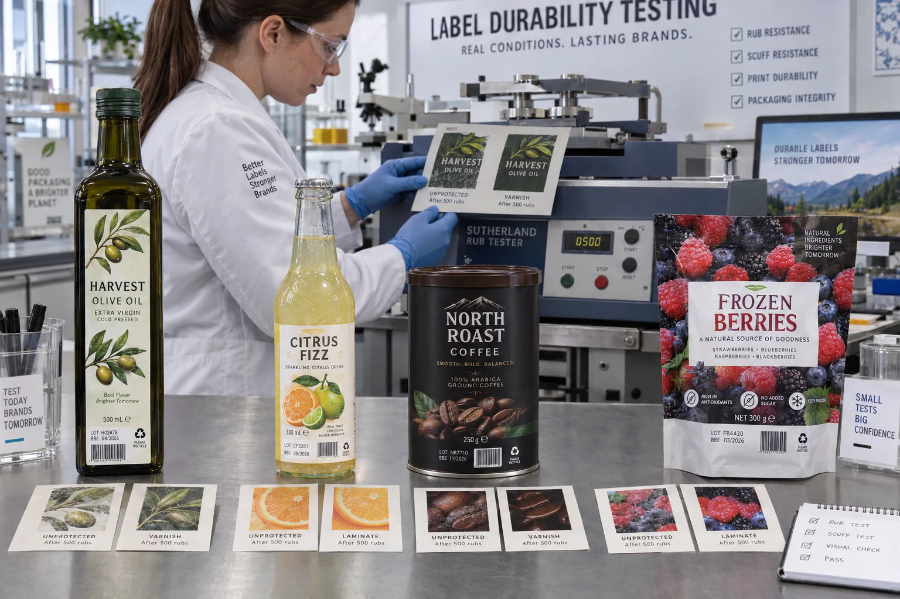

Short answer
Scuff-resistant labels require compatible ink and face stock, complete curing and a protective finish matched to real abrasion. Varnish may be enough for normal handling. Lamination provides a stronger barrier when labels face heavy carton contact, moisture, oil or repeated wiping.
“Add matte laminate” is an easy repair because it sounds decisive. Sometimes it is correct. Sometimes the ink never bonded properly to the film, and the laminate simply covers a process problem. Diagnose before adding cost.
Where scuffing actually happens
| Journey stage | Abrasion source | Visible result |
|---|---|---|
| Label application | Guides, belts or wipe-down brushes | Fine scratches or polished strips |
| Case packing | Bottle-to-bottle and divider contact | Repeated vertical rub marks |
| Freight | Vibration under sustained pressure | Lost ink at contact points |
| Cold chain | Condensation plus carton movement | Whitening, soft paper or color transfer |
| Consumer use | Hands, oil, wiping and refrigeration | Smear, scratches or edge damage |
A composite carton complaint
This is a composite planning example. A coffee company approves a matte black label after a finger-rub test. The labels survive hand application and look excellent in photos. After cross-country freight, the front panels show pale arcs where tins touched inside the carton.
My first reaction would have been to upgrade to laminate. Then the pack-out video showed loose dividers and constant metal-to-metal pressure. A laminate improved the label, but a corrected divider prevented the damage. The competitor in that situation was not another label finish. It was better secondary packaging.
Varnish, laminate and print anchorage
Overprint varnish is a thin protective coating that can improve rub resistance, moisture response and appearance with relatively little extra thickness. Lamination adds a film over the print and usually provides greater physical and chemical protection. Topcoat and ink anchorage determine whether the print grips the face stock before either finish is considered.
| Protection | Best fit | Trade-off |
|---|---|---|
| No added finish | Low-contact dry use with proven ink adhesion | Small operating window |
| Varnish | Moderate handling, cost-sensitive high volume | Less physical barrier than film |
| Film laminate | Heavy rub, moisture, oil and repeated wiping | More cost, thickness and material |
| Package redesign | Damage caused by direct hard contact | Changes beyond the label purchase |
Make the rub test mean something
ASTM D5264 covers abrasion resistance testing of printed materials with a Sutherland rub tester or equivalent. A machine gives repeatable motion, but the buyer still needs to define receptor, load, number of cycles, dry or wet condition and acceptable change.
“Passed rub test” without conditions is barely more useful than “durable.” Save the approved sample, test method and acceptance photo with the specification. If the product sees condensation or oil, include those exposures rather than testing only dry laboratory paper.
- Test the final printed and finished construction.
- Condition samples as they will be stored and transported.
- Use the package or contact material when practical.
- Check barcode and mandatory-copy readability after testing.
- Record color transfer, gloss change, scratches and substrate damage separately.
Factory-side view
A perfect lab sample can still lose inside a bad carton
We sell protective finishes, so recommending another layer is good business.
When the case pack lets bottles grind together, selling laminate without mentioning the carton is good business only once.
When varnish is enough
A well-anchored ink on a suitable film, protected by varnish and packed without severe contact, can perform beautifully. Laminate is not automatically more professional. It is valuable when the exposure justifies its barrier. Choose the lightest construction that passes the actual test and preserves the desired look.
Durability quote checklist
- Describe the package, contact points and secondary pack.
- Provide temperature, moisture, oil and cleaning exposure.
- State the expected handling and shipping route.
- Identify critical dark solids, metallics and barcodes.
- Agree on varnish or laminate candidate constructions.
- Define rub-test load, cycles, wet/dry condition and pass criteria.
- Run a filled-package shipping trial for high-risk launches.
See the official ASTM D5264 abrasion-resistance method for the laboratory framework. Compare finish options in our Label Lamination Guide and Matte vs Gloss Labels.
Frequently asked questions
What makes a label scuff resistant?
Durability comes from the compatibility of face stock, topcoat, ink, curing and protective finish. Package contact, moisture and abrasion severity determine whether varnish or laminate is needed.
Is lamination always more durable than varnish?
A film laminate generally provides a stronger physical barrier, but a properly specified varnish may be sufficient and more economical for moderate exposure. Test the intended construction.
What is a Sutherland rub test?
ASTM D5264 describes a laboratory procedure using a Sutherland-type rub tester to evaluate abrasion resistance of printed materials. Test conditions and pass criteria still need to be defined for the application.
Why does label ink scratch off film?
Possible causes include poor ink anchorage, unsuitable topcoat, under-cure, contamination or an incompatible ink system. Adding laminate may hide the symptom, but the print process should also be investigated.
Related label guides
- Food-Contact Printing Inks for Labels: Buyer Guide
- Labels for Compostable Packaging: Material Guide
- Peel-and-Reveal Labels: Extended Content Guide
Review the complete label construction
Send package photos, material details, finished label size, quantity by artwork, storage conditions and application method. We can review fit, material and production details before preparing a quote and digital proof.